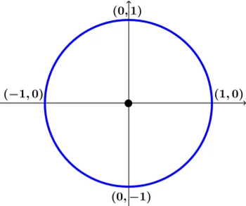
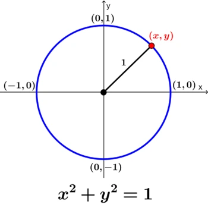
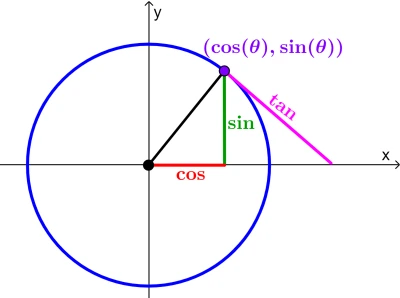
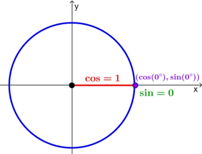
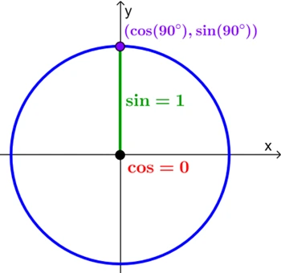
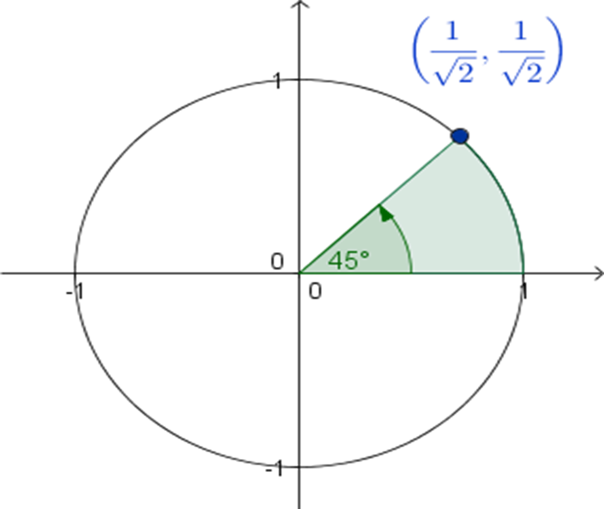
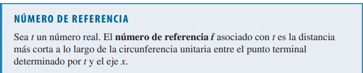

¿Qué es el círculo unitario?
Un círculo unitario es un círculo que tiene un radio de 1. Por ejemplo, la siguiente imagen muestra un círculo unitario.

El círculo unitario es empleado en matemáticas para entender las relaciones de las diferentes funciones trigonométricas en el plano cartesiano. En este círculo, los valores del seno de un ángulo son equivalentes a las coordenadas en y y los valores del coseno de un ángulo son equivalentes a las coordenadas en x. Usando el teorema de Pitágoras en el círculo unitario, podemos relacionar a las funciones trigonométricas seno, coseno y tangente.
Fórmula para el Círculo Unitario
La ecuación de un círculo está dada por la forma general:
\[ (x−h)^2 + (y−k)^2 =r^2 \]
en donde, (h,k) son las coordenadas del centro del círculo y r es el radio. Entonces, (x,y) representan a los puntos en el círculo que se ubican a una distancia r desde el centro. En el caso del círculo unitario, el centro está ubicado en (0, 0) y el radio es 1. Esto significa que la fórmula del círculo unitario es:
\[ x^2 + y^2 = 1 \]

Calcular funciones trigonométricas usando el círculo unitario
Podemos calcular las funciones trigonométricas usando el círculo unitario. Para esto, tenemos que aplicar el teorema de Pitágoras en un círculo unitario para relacionar a las funciones trigonométricas. En el siguiente diagrama, tenemos graficadas a las funciones trigonométricas en un círculo unitario en el plano cartesiano.

En el círculo unitario, el coseno es equivalente a la coordenada en x y el seno es equivalente a la coordenada en y. Por ejemplo, veamos lo que sucede cuando \( \theta = 0 \).

Observamos que la coordenada en x es 1 y la coordenada en y es 0, por lo que tenemos:
\[ \cos(0) = 1, \quad \sin(0) = 0 \]
Ahora, veamos lo que sucede cuando \( \theta = 90^\circ \).

En este caso, observamos que la coordenada en x es 0 y la coordenada en y es 1, por lo que tenemos:
\[ \cos(90^\circ) = 0, \quad \sin(90^\circ) = 1 \]
Puntos terminales en la circunferencia unitaria
Ahora supongamos que t es un número real, si se marca la distancia t a lo largo del círculo unitario a partir del punto (1,0), si se mueve en contra de las manecillas del reloj, es porque el valor de t es positivo, mientras que si se mueve a favor de las manecillas del reloj a partir del punto del mismo punto (1,0), entonces t es negativo. Si seguimos este procedimiento llegamos a un punto general P(x,y) sobre el círculo. Este punto es llamado punto terminal, y está determinado por el valor de t.
Hay muchas maneras de definir localizaciones en el circulo unitario. Vamos a comenzar definiendo una localización (x,y) en el círculo por el ángulo formado entre (x,y) y (0,0) y (0,0) y (1,0).
La localización (0,1) se asocia con \( 90^\circ \) ó \( \frac{\pi}{2} \).
La localización \( \frac{1}{\sqrt{2}}, \frac{1}{\sqrt{2}} \) se asocia con \( 45^\circ \) ó \( \frac{\pi}{4} \).
El número de referencia
De los Ejemplos 3 y 4 vemos que para hallar un punto terminal en cualquier cuadrante sólo necesitamos saber el punto terminal “correspondiente” en el primer cuadrante. Usamos la idea del número de referencia para ayudarnos a hallar puntos terminales.

Uso de Números de Referencia para Hallar Puntos Terminales
Encuentre el número de referencia t.
Encuentre el punto terminal Q (a, b) determinado por t.
El punto terminal determinado por t es P (±a, ±b), donde los signos se escogen de acuerdo con el cuadrante en el que se encuentre este punto terminal.